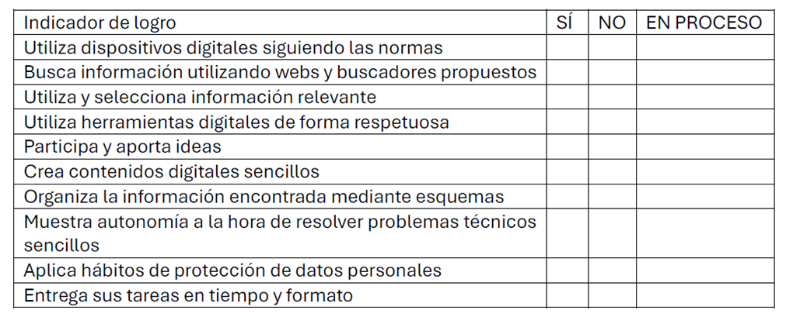

CRITERIO 1.1.a
En la Sesión 5, el proceso de evaluación del criterio 1.1.a Utilizar recursos digitales de acuerdo con las necesidades del contexto educativo de forma segura y adecuada, buscando información, comunicándose y trabajando de forma individual y en equipo, comenzando a realizar actividades en red, creando contenidos digitales sencillos, interpretando y organizando la información de la asignatura de Conocimiento del Medio se llevará a cabo mediante una observación directa y sistemática, utilizando como instrumento una lista de cotejo. Este instrumento permite desglosar un criterio complejo en conductas observables y medibles.
Este instrumento permite desglosar un criterio complejo en acciones observables y cuantificables.

Imagen de Elaboración Propia.
¿CÓMO SE OBTIENE LA NOTA DEL CRITERIO?
Valor de cada indicador: Cada "SÍ" equivale a 1 punto. Cada "NO" equivale a 0 puntos. Cada "EN PROCESO" equivale a 0,5 puntos.
EJEMPLO: Si el alumno obtiene un SÍ en 8 indicadores y un NO en 2, la puntuación total es de 8 puntos. La calificación final para este criterio en la sesión será, por tanto, de 8.